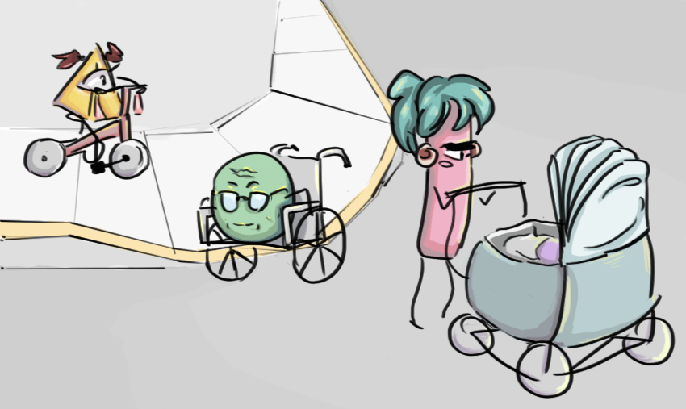

A popular model which companies use to make profit is called universal design: aim to satisfy the need of the majority to maximize profit and minimize effort. The flaw of this design is it provides for the majority alone, which is called the 80%, leaving 20% unable to use the service or product. Inclusive design tries to implement the idea that 100% of the population can be provided for if the 20% is targeted; that the 80% figures itself out through manners such as the ‘curb-cut effect’.
Inclusive design also tries to avoid creating seperate services for the 20% to prevent othering those who deviate from the mythical norm. The fear is, when seperating the services or products the minority is segregated and othered. For example, taking the bus. A design that encourages segregation would be having two seperate buses, one for people who can get on the bus without help and one for those who can't. An inclusive design would be to have one bus, but one that can kneel and lift it's seats for a wheelchair zone. This way everyone uses the same bus and other people, like parents with strollers can take advantage of a kneeling bus as well.